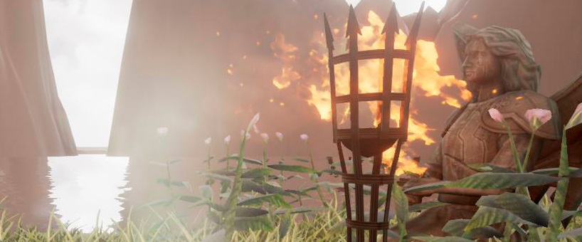

Soy una persona que le gusta lo que hace y eso son los videojuegos; inicie en el mundo de la tecnología y videojuegos desde que era pequeño, pero fue hasta finalizar la secundaria que me di cuenta que no solo me gustaba jugar videojuegos, si no que me gustaría hacerlos; así que para la educación media superior elegí una carrera que me permitiera entrar en ese mundo; al tener facilidad para resolver problemas y teniendo un no muy buen sentido artístico decidí irme por la programación, al terminar el bachillerato continúe el enfoque de la programación, aunque no completamente centrado en videojuegos, si no en software en general; el enfoque a los videojuegos se lo di al acercarme al final de la carrera, ya que la universidad nos pedía laborar durante un mínimo de 6 meses antes de egresar, fue cuando busque un estudio local que necesitará apoyo para el área de programación, gracias a un amigo encontré uno llamado 2DNutz, ahí trabaje como desarrollador jr. desde febrero del 2016, hasta que decidieron incorporarme completamente a su grupo de trabajo en enero del 2017.
Por cuestiones de crecimiento y oportunidades abandone el estudio en el 2018.
Actualmente busco publicar mi primer videojuego para dispositivos móviles, así como expandirme y salir de mi zona de confort, buscando conocimiento artístico para modelado 3D y agregando un nuevo motor para flujo de trabajo, Unreal Engine.